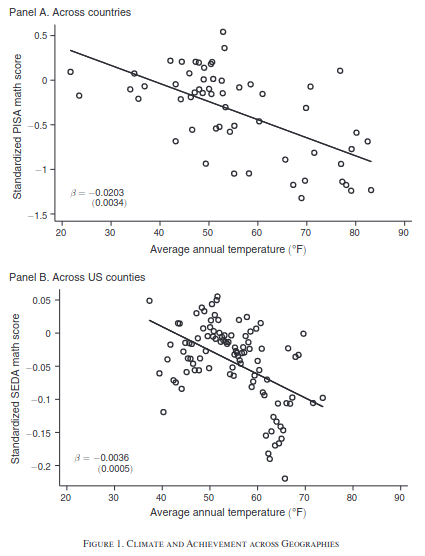

地球環境保護
国際公共政策学
はじめに
人口増加＋産業化\(\leadsto\)環境破壊
- 環境保護を巡ってどのような国内・国際政治が展開されるのか？
- 解決しやすい環境問題とそうではない環境問題があるのはなぜか？
本来は「国内」問題であった環境問題が「国際化」\(\leadsto\)越境的 (transnational) イシュー・政治
1 持続可能な開発
世界の人口や豊かさ、そして環境破壊の爆発的に拡大
- 産業革命後（18世紀後半）、特に第2次世界大戦後の世界
成長の限界 (The Limits to Growth) ：1972年のローマクラブによる報告
\(\leadsto\)人口増加や環境破壊がこのままのペースで続くと成長が限界
- 人口は指数関数的に増加
- 食糧や資源、環境は直線的に増加（or増加しない）
人類の存続（人口増加、食糧・資源の確保と環境保護の両立）に持続可能性 (sustainability) がある？
\(\leadsto\)国際社会として人類の持続可能性の確保、特に地球環境の保全への取り組み
- 1972年、国連人間環境会議：国連環境計画 (United Nations Environment Programme: UNEP) が設立
- 1987年、ブルントラント委員会：持続可能な開発 (sustainable development) の登場
- 1992年、地球サミット：持続可能な開発が国際社会の目標に
- 2000年、国連ミレニアム・サミット：ミレニアム宣言 \(\leadsto\) 2015年までの達成を目指して、ミレニアム開発目標 (Millennium Development Goals: MDGs) を設定
- 2015年、持続可能な開発目標 (Sustainable Development Goals: SDGs)
1.1 地球温暖化の被害
地球温暖化は環境に影響を与えるだけでなく、社会経済にも影響を与える。
- 学力の低下(Park ほか 2020)

- 途上国における所得の減少(Dell, Jones, と Olken 2014)
- 死亡率の増加(Deschênes と Greenstone 2011)
2 環境問題の構造
2.1 共有地の悲劇
健全な環境＝コモンズ (commons) ・コモンプール財 (common pool resource)
- 非排他的：財の消費を一部のアクターに制限することができない。
- 非競合的：財を消費するアクターの数が増えても財は減らない。
| 排他的 | 非排他的 | |
|---|---|---|
| 競合的 | 私的財 | コモンズ |
| 非競合的 | クラブ財 | 公共財 |
- 漁業、オゾン層、（健全な）気候……
\(\leadsto\)共有地の悲劇 (tragedy of the commons)(Hardin 1968)：コモンズの過剰な消費、それ故の枯渇
小さな湖で2人の漁師がどの程度、漁業を行うか考えている。
- 毎年、魚を10%までは収穫しても、生態系に影響は出ない。
- お互い協力すれば、（例えば20年間は）毎年5%ずつ漁業ができる。よって、\(0.05 \times 20 = 1\)の利益を得る。
- どちらかが裏切って10%の魚を収穫すると、\(0.1 \times 20 = 2\)の利益を得る。もう一人は、漁業ができないので\(0\)の利益を得る（何も得ない）。
- お互いに裏切って10%の魚を収穫すると、生態系が維持できず（例えば8年で）魚は絶滅する。このときは\(0.1 \times 8 = 0.8\)の利益を得る。
- コモンズは競合的\(\leadsto\)誰かの消費が他の人に悪影響を及ぼす、負の外部性
- 本来、消費する人や組織が支払うべき費用を他者に押し付けている。
- 例、生態系保護のために漁業を自粛
- 他の人が資源を保護してくれる\(\leadsto\)自分一人で資源を消費しても問題はない（タダ乗り）。
- 他の人が資源を消費する\(\leadsto\)どうせ枯渇するなら自分も消費してしまえ。
\(\leadsto\)国家や人々は環境破壊をしたいわけではない／ただ乗りするメリットがあるため、環境保護の努力を怠る。
- 一人の行動（資源の保護や消費）では環境を大きく変えない。
- 多くの人が同じように考え、同じ行動を取ると環境が変化
囚人のジレンマと同じ構造を持つ（＝集合行為問題の一種である）。

2.2 国内社会における対立
企業：環境を破壊して安い費用で商品を生産できる。
消費者：環境破壊という被害を受ける／安い価格で商品を消費できる。
\(\leadsto\)環境問題で利益を得るのは少数の企業で、被害を受けるのは多数の市民
環境規制の強化・現状維持は公共財である\(\leadsto\)（貿易政策のときと同様に）少数派の意見が通りやすい。
- 誰かが環境保護規制を強化（緩やかに）する努力\(\leadsto\)自分はなにもしなくてもいい。
- 少数の企業は長期的関係があり、互いに監視\(\leadsto\)協力してロビー活動
- 環境保護を求める多くの市民\(\leadsto\)他者の努力にただ乗り
3 環境保護の成否
環境問題の解決策の代表的な手段
- 国家による介入：環境保護の規制を導入、違反に対する指導や罰則
- 所有権：環境（破壊）に対する所有権を設定し、市場メカニズムによる調整
国家（上位の存在）がいなくても、自発的に共有地の悲劇を回避することもできる？(Ostrom 2022)
3.1 集団の規模
小さな集団\(\leadsto\)集合行為問題を克服しやすい。
- 周囲からの監視や圧力が大きい。
- 酸性雨は化石燃料の燃焼などによって引き起こされる\(\leadsto\)影響は工業地帯の周辺に限定される。

様々な分野で協力（イシュー・リンケージ）・継続的な関係（将来の影）\(\leadsto\)協力しやすい。
- 協力をしない\(\leadsto\)他の分野や将来ににおいて報復されやすい。
\(\leadsto\)監視や圧力が高まる・被害の多くは自国や近隣諸国にもたらされる\(\leadsto\)環境保護
- 東アジアでは大気汚染対策の協調がうまくいっていない。
3.2 利害の偏り
環境破壊の被害が大きい国＝環境保護の能力が大きい国\(\leadsto\)解決しやすい。
- フロンガスは南極や北極上空のオゾン層を破壊し（オゾン・ホール）、紫外線が強くなる。
- フロンガスは冷蔵庫などで使用されている。
- オゾン・ホールによる被害が大きいのは北側の先進国であり、フロンガスを消費しているのも工業国である。
\(\leadsto\)一部の（同じ）国が問題解決の意図と能力を持っている。

1987年のモントリオール議定書：フロンガスは禁止\(\leadsto\)オゾン層は回復傾向(Solomon ほか 2016)
3.3 問題の複雑さと深刻さ
問題が比較的単純・深刻でない場合\(\leadsto\)協調は実現しやすい。
- 原因と結果の関係が明瞭である。
- 規制をしても社会経済的影響が小さい。
\(\leadsto\)特定の化学物質の規制について合意がしやすい。
- 1989年、バーゼル条約：有害廃棄物の越境的移動を規制
- 1992年、ロッテルダム条約：有害な化学物質などの貿易や管理に関する情報共有
- 1995年、ストックホルム条約：自然に分解されず、生き物に残留し濃縮する有害物質を規制
- 2017年、水俣条約：水銀を規制
3.3.1 非国家アクター
環境保護においてNGOなどの非国家アクターの果たす役割は大きい。
- 国際機関、科学者集団など脱国家的アクターからなる知識共同体 (epistemic community)
1946年、国際捕鯨委員会 (International Whaling Commission: IWC) ：クジラの保護
- 各捕鯨国は捕鯨量の上限（クォータ）を定める
- クジラの保護の観点から不十分
\(\leadsto\)環境保護を目指すNGOが加盟料を肩代わり\(\leadsto\)非捕鯨国にIWCへの参加を求める。

- 商業捕鯨のモラトリアムが決定される。
- 日本はオーストラリアによりICJに訴えられる。
- 南極海捕鯨事件で敗訴し、判決を遵守した後に、IWCから脱退
3.4 地球温暖化
気候変動 (climate change)・地球温暖化 (global warming)：CO2などの温室効果ガス (greenhouse gas: GHG) によって地球全体の気温が上昇する（その結果、気候が変化する）現象
- ほとんど全ての国が影響を受ける。
- 能力のある国の方が大きな被害？

- 化石燃料という経済社会にとって不可欠な資源を規制する必要
- GHGの排出と地球温暖化の因果関係は不明瞭（と考える人や国がいる）
- GHGの大量排出国であるアメリカや中国のリーダーシップが不十分？
\(\leadsto\)囚人のジレンマを解決するために重要な要因の多くを欠如している。
3.5 市場メカニズム
動機づける (incentivize)\(\leadsto\)環境保護をすることによる利益を増やす／環境破壊をすることの利益を減らす
- 公共財を供給するときに副産物として利益が生じるjoint productであるならば、環境を保護しやすい。
- フロンガスの禁止に至ったもう一つの大きな理由は、オゾン層を破壊しにくい代替フロンの開発に成功
- 代替フロンは温室効果ガス\(\leadsto\)モントリオール議定書で規制
- SDGs（やESG投資やCSR）\(\leadsto\)環境保護によって企業価値を高めることが可能に？
- “greenwashing”：環境保護に貢献していないのに、そのように装う問題
- フロンガスの禁止に至ったもう一つの大きな理由は、オゾン層を破壊しにくい代替フロンの開発に成功
- 炭素税 (carbon tax)\(\leadsto\)気候変動の費用を企業や消費者が支払う\(\leadsto\)GHGの排出量を削減
3.5.1 排出権取引
税金以外の市場メカニズムとして排出権取引 (emissions trading/cap-and-trade system)

- 1997年、京都議定書：国際的な排出権取引が制度化
- 企業や国家は割り当てられた排出権を（オークションなどで）売買
- EUの排出権取引のフェーズ3（2005-2019年）では35%の排出を削減
- 中国もパリ協定の下で排出権取引の導入を表明
- 京都議定書ではクリーン開発メカニズム (clean development mechanism: CDM) も導入
- 先進国が途上国でGHG排出削減プロジェクトを行うことで、その分の排出権を獲得
3.6 経済発展
経済発展\(\leadsto\)環境破壊の主要因／環境保護が促進
- 中国やインドにおいて（自国内の環境問題への対策もあり）、環境保護政策が行われ始めている。
環境クズネッツ曲線：豊かになるにつれて環境破壊が行われるが、一定以上の豊かさになると環境保護に切り替わるという仮説

- CO2排出原単位：一定の生産量あたりのCO2排出量

- 発展途上国は先進国で開発されたクリーンな環境技術を使うことができる（後発者利益）
- 発展途上国のエネルギー設備などは非効率\(\leadsto\)新しい技術の導入による環境改善の効果も大きい
4 地球環境保護を巡る国際政治
4.1 国際社会における対立
4.1.1 先進国と新興国・途上国
国際社会においても環境を破壊して、他国に負の外部性を押し付けつつ、自国の経済成長を実現する。
- 現代では先進国だけでなく、新興国も大量のCO2を排出
- これまで環境破壊を行い経済成長をしてきた先進国／これから経済成長をしようとする途上国
- 途上国からすれば、なぜ先進国が破壊した環境を回復するために、経済成長を諦める？
- 一人あたりあたりCO2排出量は未だに先進国の方が多い。
\(\leadsto\)先進国と新興国、発展途上国の間でどのように環境保護の負担を分担？
4.1.2 先進国間
しばしば、環境破壊によって利益を得る国が存在する。

- 地球温暖化\(\leadsto\)北極海航路や北極海の海底資源が利用可能
- 北極評議会：北極圏に関する協議を行う組織
- 北極圏の利権を巡って多くの国が関与を狙っている。
- グリーンランドは温暖化\(\leadsto\)氷床が解ける\(\leadsto\)地下資源の採掘が可能\(\leadsto\)経済が急速に成長
- デンマークからの独立を目指す？
- アメリカや中国も影響力を強めようとしている？
4.2 地球環境を巡る交渉
4.2.1 京都議定書
気候変動に関する京都議定書（1997年）：先進国と途上国は共通だが差異ある責任 (Common but Differentiated Responsibility) を持っている
- 附属書Ⅰの締約国は、2008年から2012年までの約束期間において、附属書Ｉの締約国全体の排出量を1990年の水準から少なくとも５パーセント削減することを念頭において、個別に又は共同で、附属書Ａに掲げる温室効果ガスの人為的な排出量（二酸化炭素換算量）の合計が、附属書Ｂに定める数量的な排出抑制及び削減の約束に基づいて計算された割当量を超えないことを確保しなければならない。
締約国は、それぞれ共通に有しているが差異のある責任並びに各国及び地域に特有の開発の優先順位並びに各国特有の目的及び事情を考慮し、非附属書Ⅰの締約国についていかなる新たな約束も導入しないが、条約第４条の規定に基づく既存の約束を再確認し、並びに持続可能な開発を達成するためにその約束の履行の促進を継続し、条約第４条３、５及び７の規定を考慮して、次のことを行う。
- 京都議定書では先進国（附属書Iの締約国）のみCO2削減の数値目標を達成する義務
- アメリカは不参加
- 京都議定書は第1約束期間（2008-2012年）で温室効果ガスを1990年に比べて約5%削減するよう求めた。
- 第2約束期間（2013-2020年）には日本は参加せず。


4.2.2 パリ協定
京都議定書以降の地球温暖化対策の取り組み\(\leadsto\) 2015年にパリ協定が成立
- この協定は、条約（その目的を含む。）の実施を促進する上で、持続可能な開発及び貧困を撲滅するための努力の文脈において、気候変動の脅威に対する世界全体による対応を、次のことによるものを含め、強化することを目的とする。
- 世界全体の平均気温の上昇を工業化以前よりも摂氏二度高い水準を十分に下回るものに抑えること並びに世界全体の平均気温の上昇を工業化以前よりも摂氏一・五度高い水準までのものに制限するための努力を、この努力が気候変動のリスク及び影響を著しく減少させることとなるものであることを認識しつつ、継続すること。
- 長期目標として気温上昇を2℃（理想は1.5℃）以内に抑える。
- ほとんど全ての国が参加
先進国と途上国の利害が近づく。
- 環境保護に熱心なヨーロッパ諸国の圧力
- アメリカにおける民主党政権の成立
- 中国の五カ年計画における環境対策の強化
全ての国が自国が決定する貢献 (Nationally Determined Contribution: NDC) を5年毎に設定／達成は義務付けされず
全ての締約国は、気候変動に対する世界全体による対応への自国が決定する貢献（以下「国が決定する貢献」という。）に関し、前条に規定するこの協定の目的を達成するため、次条、第七条、第九条から第十一条まで及び第十三条に定める野心的な努力に取り組み、及びその努力について通報する。全ての締約国の努力については、この協定の効果的な実施のために開発途上締約国を支援する必要性についての認識の下で、時間とともに前進を示すものとなる。
- 全ての国が自発的に参加

{kind=link}
{kind=link}
{kind=link}
{kind=link}
{kind=link}
{kind=link}
{kind=link}
- 目標は十分か、実効性はあるのか？
4.2.3 環境問題と時間
地球環境問題（特に気候変動）の影響は長期的将来において生じる点で、他の国際問題とは異なる。
- 人々は将来の出来事の価値を割り引く (discount)\(\leadsto\)将来の環境保護の利益＜現在の費用
- 将来の不確実な利益＜現在の確実な利益
- 環境問題の影響は遠い将来＆不確実
- 将来を重視することは国際協調のために必要／将来を重視すれば交渉で妥協するのが難しくなる。
- 将来を重視\(\leadsto\)国際協調から離脱したときの制裁を恐れる\(\leadsto\)協調的
- 将来を重視\(\leadsto\)環境保護によって利益を失う国々や組織\(\leadsto\)環境保護に否定的
- 「現在は存在していない将来世代」と現在世代の間の世代間衡平 (intergenerational equity)
- 将来世代の利益、関心は分からない＆政治に反映させる仕組みは欠如
- 政治的生き残りを目指す政治的指導者\(\leadsto\)現在世代の短期的な利益を追求
4.2.4 地球環境の国際制度
国連環境計画 (United Nations Environment Programme: UNEP) や世銀の地球環境ファシリティ (Global Environment Facility: GEF) 以外に、（WTOのような）環境保護全般の国際制度はない
\(\leadsto\)分野ごとに枠組み条約 (framework convention)
- 比較的合意のしやすい一般原則を設定\(\leadsto\)詳細な規制は議定書 (protocol) で策定
- オゾン層保護ではウィーン条約＞モントリオール議定書でフロンガス規制
- 気候変動枠組み条約 (United Nations Framework Convention on Climate Change: UNFCCC)＞京都議定書やパリ協定
- 大きな利害対立の克服＆不確実な将来への対応の難しさ
枠組み条約の締約国会議 (Conference of the Parties: COP) で環境保護の詳細について交渉
- 例えば、COP20はその枠組み条約の20回目の締約国会議
- いろいろな枠組み条約でCOPと呼ぶので注意
- NGOや科学者が積極的に参加し、情報共有や問題提起を行う
- 科学技術の進歩、新しい科学的知見などに柔軟に対応
規制の目標を定めることが多い\(\leadsto\)どのように目標を実現するかは各国の自由の裁量
- 環境問題への対策を監視するのは難しい\(\leadsto\)義務付けは困難
- 石油タンカーのタンクの洗浄の際に原油を放出するが、それを監視するのは困難
- 原油の排出を削減する装置を義務付けたところ、高い遵守率(Mitchell 1994)
- フロンガスの禁止はGHGの排出削減よりも検証しやすい
- 紛争処理メカニズム（例、WTO）や制裁は存在しないことが多い
5 人々を変えることはできるか？
環境問題は個人も原因である国際問題
\(\leadsto\)人々の「意識」を変えれば問題は解決する？
- より快適な生活環境を求める気持ちを変えるのは難しい。
- 省エネ技術への補助金や環境に優しい設備を配布しても受け取らない(Fowlie, Greenstone, と Wolfram 2018; Hanna, Duflo, と Greenstone 2016)
ちょっとしたきっかけ（ナッジ）で行動は変わるかも。
- ピーク時に高い電力料金になる（それ以外は安い）プランに自発的に参加する人は少ないが、最初からそのプランであれば変更しない(Fowlie ほか 2021)
- 道徳的な要請も価格調整も節電効果がある(伊藤 2017, 第2章; Ito, Ida, と Tanaka 2018)
- ただし、価格調整の方が効果は大きく、持続性も高い
- 周辺世帯との電力消費を比較したレポートを受け取った人は電力を節約する(Allcott と Rogers 2014)
- レポートが終わっても節約は続ける